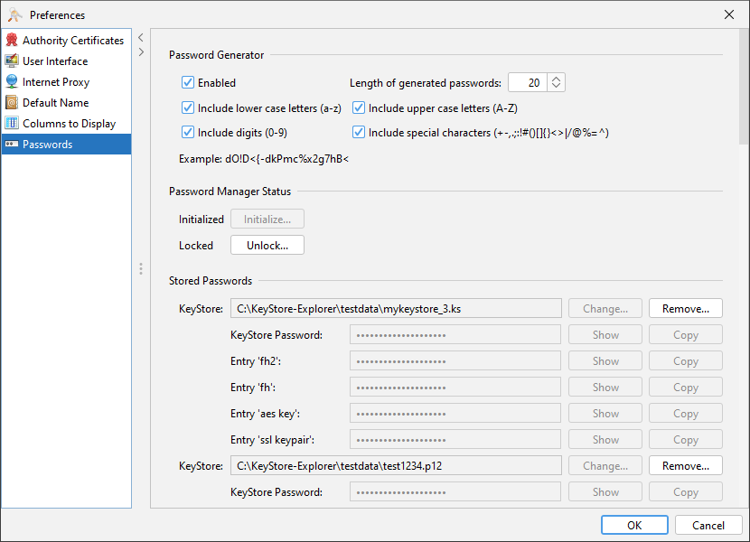
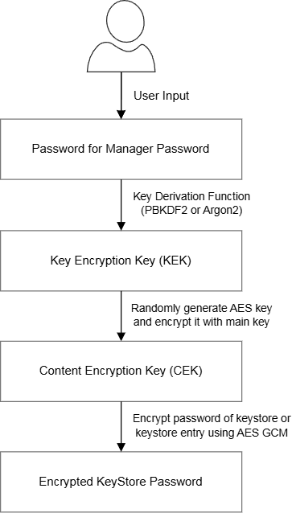

The password manager is a simple way to store the passwords of your keystores and keystore entries in a secure manner protected by a single password.
When you create a new keystore, you are asked if you want to store its passwords in the password manager. When you open a keystore, the password manager will automatically fill in the password for you.
The password manager is not a full-featured password manager like KeePass or Bitwarden. It is only meant to store the passwords of your keystores and keystore entries.
The decision to store a password is done on a per-keystore basis, and it includes all known passwords of this keystore. If you decide to add a keystore to the password manager, the file name and path of the keystore and its encrypted passwords are stored in a password file. This password file can be found in the configuration directory of KSE, its name is "keystore-passwords.json".
Whenever you open a keystore, KSE will check if the keystore file is one of the known keystores in the password manager. If it is and the password manager has not already been unlocked, KSE will ask for the password of the password manager. This password is then used to decrypt the password file, the passwords of the keystore are retrieved and used to unlock the keystore and its entries.
In the preferences dialog a keystore can be removed from the password manager, which will delete all passwords of this keystore from the password manager.
If the password manager is unlocked, the passwords of the keystore can be viewed in the preferences.
Sometimes it might be useful to change to path of a keystore in the password manager. This can also be done in the preferences.

This section describes the cryptographic details of the password encryption in the password manager.
The derivation of a 256-bit AES key encryption key (KEK) from the password manager password is done using the PBKDF2 algorithm with an SHA-256 hash function and a random 16 byte salt. The number of iterations is currently 600,000, which follows the recommendations of NIST (also see OWASP Password Storage).
The use of an alternative key derivation function (Argon2) is implemented and prepared but not yet available in the GUI.
The KEK is used to encrypt the random 256-bit AES content encryption key (CEK) using the AES algorithm in GCM mode. The initialization vector (IV) is randomly generated. The CEK is used to encrypt the actual passwords, again using AES in GCM mode with random IVs.
A new CEK is created with a CSPRNG every time the password file is updated. This has the advantage that the number of usages of the same CEK is limited to the number of keystore passwords, which further decreases the risk of using the same CEK with the same IV more than once.
The following diagram illustrates how the encryption of the passwords works:

The password manager uses the Bouncy Castle library for the cryptographic operations.
The internal data structures include information about the encryption algorithm, the key derivation function, and the used parameters. This allows the password manager to be extended in the future to support other algorithms or parameters.
As the encryption of the passwords takes some time and not every intermediate state of the opened keystores and their passwords needs to be saved, the stored passwords are only updated at certain save points. These are:
As a consequence the password list in the KSE preferences dialog does not necessarily show all managed passwords at all times.
Another consequence is that exiting KSE sometimes takes a bit longer when the password file has to be updated.